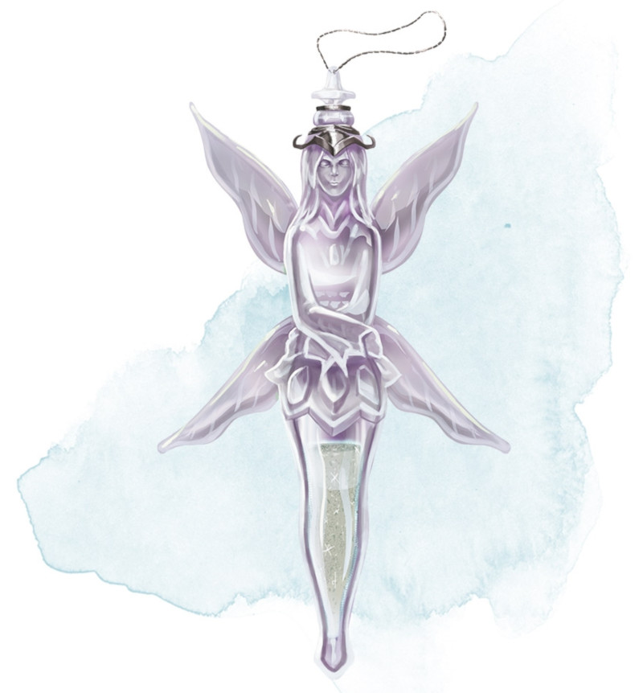

Poussière de disparition
Objet merveilleux, peu commun
Rangée dans un petit paquet, cette poudre ressemble à du sable très fin. Il y en a assez pour une utilisation. Lorsque vous utilisez une action pour jeter la poussière dans l'air, vous et toute créature et objet dans un rayon de 3 mètres autour de vous devenez invisibles pour 2d4 minutes. La durée est la même pour tous les sujets, et la poussière est consommée lorsque sa magie prend effet. Si une créature affectée par la poussière attaque ou lance un sort, l'invisibilité se termine pour cette créature.
Dungeon Master´s Guide (SRD)
